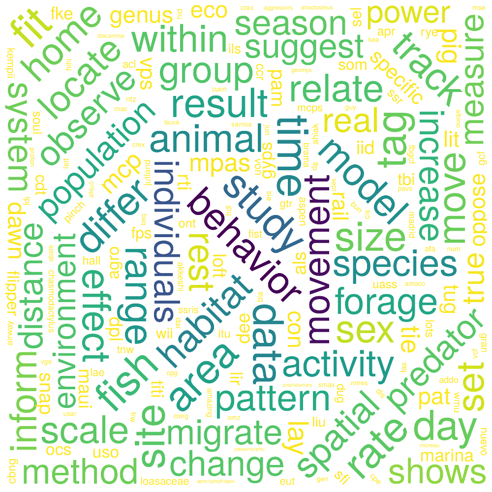

Recent trends in Movement Ecology: a quantitative review of tools, topics and research gaps
2021-11-21
1 Introduction
Note: This is the companion website for the manuscript “Recent trends in Movement Ecology: a quantitative review of tools, topics and research gaps,” from Joo et al., available as an arXiv pre-print.
1.1 Abstract of the manuscript
Movement is fundamental to life, shaping population dynamics, biodiversity patterns and ecosystem structure. In 2008, the Movement Ecology Framework (MEF, Nathan et al. 2008) introduced an integrative theory of organism movement—linking internal state, motion capacity and navigation capacity to external factors—which has been recognized as a milestone in the field. Since, the study of movement experienced a technological boom, providing massive quantities of tracking data globally of both animal and human movement at ever finer spatio-temporal resolutions. In this work, we provide a quantitative assessment of the state of research in animal and human movement under the MEF.Using a text mining approach, we reviewed >8000 papers, identified tools and methods, and assessed all components of the MEF. Over the past decade, the publication rate has increased considerably, along with major technological changes, such as an increased use of GPS devices and accelerometers, and a convergence towards the R software.
However, research, particularly in animals, still largely focuses on the effect of environmental factors on movement, with much less focus on motion and navigation.
We discuss the potential for the technological and methodological advances in the field to lead to more integrated and interdisciplinary research and the exploration of key movement processes like navigation, and evolutionary, physiological and life-history consequences of movement.
